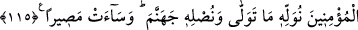

“Biz ona yakında büyük bir mükâfât vereceğiz” ki onu vasfetmekten ifâdeler âciz
kalır. Elden kaçırılan geçici dünyâ malı onun yanında çok hakir kalır.
115- Kendisine doğru yol belli olduktan sonra, kim Peygamber’e karşı çıkar ve
mü’minlerin yolundan başka bir yola giderse, onu o yönde bırakırız ve cehenneme
sokarız; o ne kötü bir yerdir.
“Kendisine doğru yol belli olduktan sonra” peygamberin nübüvvetine delalet eden
mucizelere şâhit olmak sûretiyle hak kendisine zâhir olduktan sonra “kim Peygamber’e
karşı gelir” muhalefet ederse… “__WORD__, “şık” kelimesinden türemiştir. Çünkü
muhâliflerden her biri başka taraftadır. “ve mü’minlerin yolundan başka bir yola
giderse,” yâni mü’minlerin üzerinde dâim olduğu itikad ve amel gibi dosdoğru dinin
dışında başka bir şeye tâbi olursa “onu o yönde bırakırız” onu yöneldiği sapık yolda
devamlı kılarız ve kendisini seçtiği şeyle başbaşa bırakıp rezil ederiz “ve cehenneme
sokarız”, yâni oraya girdiririz. “O” yâni cehennem “ne kötü bir yerdir.”
Rivâyete göre Tu’me, Allah’ın hükmüne inat edip elinin kesilmesiyle rezil
olacağından korkarak Rasûlullah (s.a.v)’e muhâlefet etti. Mekke’ye kaçarak
oradakilerin dinine girdi ve kâfir olarak öldü.
Akıllı kimsenin mü’minler cemâatine muhâlefet etmemesi gerekir. Çünkü sürüden
ayrılan koyunu kurt kapar. Mü’minlerin yolu, cennete, Allah’a yakınlığa, vuslata ve
O’nunla buluşmaya ulaştıran hak yoldur.
“Onların fısıldaşmalarının çoğunda hayır yoktur,” Yâni nefis, şeytan ve hevâ ile
fısıldaşanlarda hayır yoktur. Çünkü onlar şerlilerdir. Fısıldaştıkları şeyde de hiç bir
hayır yoktur. Onlar, kötülüğü, çirkin olanı ve şerîatın uygun görmediği şeyleri
emrediyorlar. Daha sonra Allah Teâlâ istisna yaptı ve “Ancak bir sadaka yâhut bir
iyilik yâhut da insanların arasını düzeltmeyi emreden (in fısıldaşması) müstesnâ”
buyurdu. Yâni bu hayırlı işleri emredeni istisnâ etti. Çünkü hayır ondadır. Allah Teâlâ
umûmî olarak vahiy yoluyla has kullarına da rahmânî hâtır ve rabbânî ilhamla hayırları
emreder.
Hâtır (insanın içine gelen hitap), melek vasıtasıyla olduğu gibi vâsıtasız da olur.
Rasûlullah (s.a.v.) şöyle buyurmuştur: “Muhakkak ki kalbe melek ilhamda bulunur,
şeytan da vesvese verir. Meleğin ilhamı hayrı va’detmesidir, şeytanın vesvesesi ise
şerri vadetmesidir.”[153]
İlham, Allah tarafından vâsıtasız gelen şeydir ki iki kısımdır: Birinci kısım, kulun
kendisine gelenin Allah’dan olduğunun şuurunda olmadığı ilhamdır. İkinci kısım ise,
ilhâmın nûrunu öğretmesi ve tanıtması sebebiyle, kulun bunun Allah Teâlâ tarafından